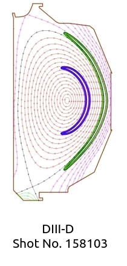

GLOBAL TOROIDAL CODE USING X-POINT
GTC-X
 GTC-X is a global code developed at IISc Bangalore, with an important contribution from UC Irvine. The GTC-X code features:
- GTC-X is a first principle particle-in-cell (PIC) code, which couples core and SOL region of the tokamak and can simulate the entire plasma volume.
- A global approach for both plasma and background magnetic geometry, which can be obtained from axisymmetric ideal MHD equilibria computed with EFIT and IPREQ code.
- GTC-X is focusing on two frequency regimes (i) low frequency mode (below ion cyclotron frequency) such as micro-turbulence, energetic particle modes, etc and (ii) high frequency modes (ion cyclotron frequency and beyond) like ion cyclotron wave (ICW), ion Bernstein wave (IBW), lower hybrid wave (LHW).
- Both gyrokinetic (5D for low frequency micro-turbulence) as well fully kinetic (6D for high frequency modes) particle integrator.
- Field aligned particle grid interpolation for axisymmetric mesh in cylindrical coordinates.
- GTC-X has both openMP and MPI parallelization with particle decomposition.
- Both gyrokinetic and fully kinetic finite element Poisson solver using PETSc library.
- Perturbative (delta-f) simulations model.